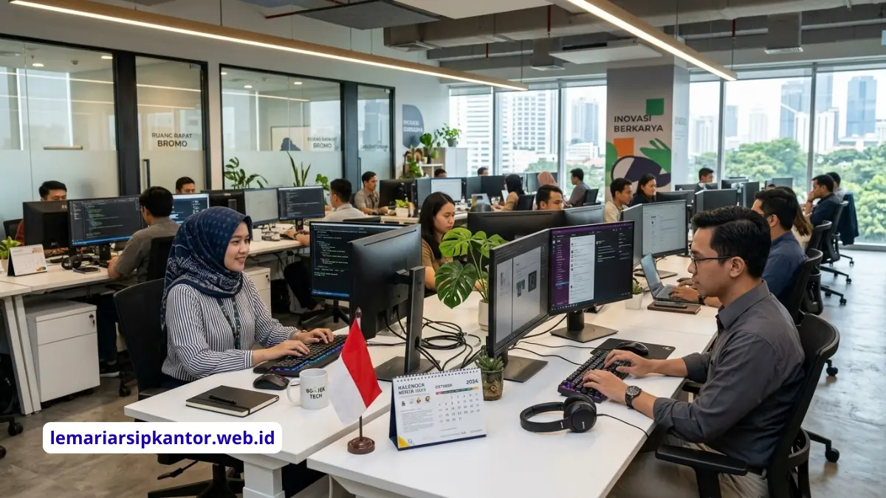

Menata kantor nyaman dan ergonomis berarti menyelaraskan pencahayaan meja kerja, desain lobi, dan pemilihan furnitur agar staf tetap sehat, produktif, dan tamu merasa nyaman sejak pintu masuk.
Apa Itu Penataan Kantor yang Ergonomis dan Mengapa Penting?
Penataan kantor yang ergonomis adalah pengaturan ruang, pencahayaan, dan furnitur agar sesuai dengan kebutuhan fisik dan psikologis penggunanya.
Konsep ini tidak hanya soal estetika, tetapi juga soal fungsi. Kantor yang ergonomis dirancang agar staf tidak cepat lelah, tamu merasa disambut dengan baik, dan operasional harian berjalan efisien.
Tiga area yang paling sering menjadi perhatian utama adalah meja kerja individu, lobi sebagai wajah perusahaan, dan perangkat kerja seperti meja komputer.
Pentingnya penataan kantor yang baik terlihat dari dampaknya terhadap kenyamanan jangka panjang.
Pencahayaan yang buruk dapat memicu ketegangan mata dan sakit kepala, lobi yang sempit dan berantakan dapat memberi kesan kurang profesional, sementara furnitur yang tidak sesuai standar dapat menimbulkan keluhan fisik pada staf yang bekerja dalam waktu lama di depan komputer.
Siapa yang Perlu Memperhatikan Penataan Kantor Ini?
Penataan kantor yang tepat penting bagi pemilik usaha, manajer operasional, tim HR atau General Affair, serta tim procurement yang bertanggung jawab atas pengadaan furnitur.
Bagi perusahaan kecil dan menengah, penataan kantor sering kali dilakukan bertahap sesuai anggaran.
Karena itu, penting untuk memahami prioritas: area kerja individu (meja dan pencahayaan), area penerimaan tamu (lobi), dan kebutuhan kolektif seperti pengadaan meja komputer dalam jumlah banyak.
Ketiganya membutuhkan pendekatan berbeda namun tetap harus konsisten dengan identitas dan anggaran perusahaan.
Bagaimana Pencahayaan Meja Kerja Mempengaruhi Kenyamanan Kerja?
Pencahayaan meja kerja yang ergonomis mengurangi ketegangan mata, menjaga fokus, dan mendukung postur kerja yang lebih sehat sepanjang hari.
Secara umum, pencahayaan kerja yang baik memadukan cahaya alami dari jendela dengan pencahayaan buatan yang merata, tanpa menimbulkan silau pada layar komputer.
Penempatan lampu meja tambahan di sisi yang berlawanan dengan tangan dominan juga membantu mengurangi bayangan saat menulis atau membaca dokumen fisik.
Pembahasan lebih rinci mengenai tips mengatur pencahayaan meja kerja ergonomis dibahas lengkap pada artikel cluster khusus di bawah.

Ilustrasi: Ruang kerja kolektif yang ditata secara ergonomis untuk produktivitas optimal.
Bagaimana Desain Lobi Kantor Kecil Bisa Tetap Terasa Luas?
Desain lobi kantor kecil dapat tetap terasa luas dengan memanfaatkan warna terang, furnitur multifungsi, dan pencahayaan yang direncanakan dengan baik.
Lobi adalah titik kontak pertama antara perusahaan dan tamu, mitra bisnis, atau calon klien.
Pada kantor dengan luas terbatas, kesalahan umum adalah menempatkan terlalu banyak furnitur besar sehingga ruang terasa sesak.
Solusinya adalah memilih furnitur dengan ukuran proporsional, menata jalur sirkulasi yang jelas, dan menghindari elemen dekoratif berlebihan.
Panduan lengkapnya dibahas pada artikel cluster mengenai cara menata desain lobi kantor kecil agar tetap terasa nyaman dan luas.
Mengapa Pemilihan Meja Komputer Kantor Perlu Direncanakan Secara Kolektif?
Pemilihan meja komputer kantor secara kolektif membantu perusahaan mendapatkan harga yang lebih efisien dan spesifikasi yang seragam di seluruh unit kerja.
Untuk perusahaan yang memiliki banyak staf atau sedang membuka kantor baru, pembelian meja komputer satu per satu cenderung kurang efisien dari sisi waktu maupun anggaran.
Pembelian dalam skema grosir memungkinkan tim procurement bernegosiasi harga, memastikan konsistensi desain antar ruangan, dan mempercepat proses pengadaan.
Rincian mengenai daftar harga grosir meja komputer kantor untuk pembelian kolektif PT dibahas pada artikel cluster terkait.
Apa Saja Kesalahan Umum dalam Menata Kantor?
Kesalahan umum dalam menata kantor meliputi pencahayaan yang tidak merata, tata letak lobi yang terlalu padat, dan pemilihan furnitur tanpa mempertimbangkan ergonomi.
Beberapa kesalahan yang sering ditemukan antara lain menempatkan meja kerja langsung menghadap jendela tanpa tirai sehingga menimbulkan silau, mengisi lobi dengan dekorasi berlebihan yang justru menyempitkan ruang gerak, serta membeli furnitur kantor hanya berdasarkan harga termurah tanpa mempertimbangkan daya tahan dan kenyamanan jangka panjang.
Kesalahan-kesalahan ini umumnya baru disadari setelah furnitur digunakan dalam waktu lama dan mulai menimbulkan keluhan dari staf.
Bagaimana Langkah Praktis Menata Kantor dari Awal?
Langkah praktis menata kantor dimulai dari perencanaan kebutuhan ruang, penentuan anggaran, pemilihan pencahayaan, hingga pengadaan furnitur secara bertahap.
- Petakan kebutuhan ruang: area kerja individu, ruang tamu atau lobi, dan ruang pendukung lainnya.
- Tentukan anggaran untuk masing-masing area agar prioritas lebih jelas.
- Rencanakan pencahayaan meja kerja terlebih dahulu karena berdampak langsung pada kenyamanan harian staf.
- Desain ulang lobi dengan mempertimbangkan luas ruang yang tersedia dan kesan pertama yang ingin ditampilkan.
- Lakukan pengadaan furnitur, termasuk meja komputer, secara kolektif untuk efisiensi biaya dan konsistensi desain.
- Evaluasi kembali tata ruang setelah beberapa waktu penggunaan untuk penyesuaian lebih lanjut.
Kesimpulan
Menata kantor yang nyaman dan ergonomis bukan proyek sekali jadi, melainkan proses bertahap yang dimulai dari kebutuhan dasar staf, yaitu pencahayaan meja kerja, dilanjutkan dengan penataan lobi sebagai wajah perusahaan, dan diakhiri dengan pengadaan furnitur seperti meja komputer secara kolektif.
Dengan perencanaan yang konsisten, kantor dapat tampil profesional sekaligus mendukung kenyamanan kerja sehari-hari.
Pertanyaan yang Sering Diajukan (FAQ)

BUDI SANTOSO
Seorang praktisi dan konsultan manajemen kearsipan dengan pengalaman lebih dari 15 tahun membantu BUMN dan perusahaan multinasional menata sistem dokumen mereka secara efisien dan aman.